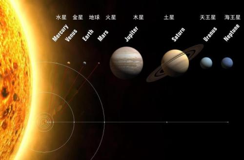

星火 |
天文网 |
web 天文博物馆 |
 |
创建于1996年 |
 太阳系
太阳系是以太阳为中心，和所有受到太阳的引力约束天体的集合体:8颗行星、至少173颗已知的卫星、几颗已经辨认出来的矮行星(冥王星、谷神星、阋神星(齐娜)、妊神星和鸟神星)和数以亿计的太阳系小天体。这些小天体包括小行星带天体、柯伊伯带天体、彗星和星际尘埃。[3] 太阳系是以太阳为中心，和所有受到太阳的引力约束天体的集合体。包括八大行星（由离太阳从近到远的顺序：水星、金星、地球、火星、木星、土星、天王星、海王星 ）、以及至少173颗已知的卫星、5颗已经辨认出来的矮行星和数以亿计的太阳系小天体。 广义上，太阳系的领域包括黄矮星 太阳，4颗像地球的类地行星，由许多小岩石组成的小行星带，4颗充满气体的类木行星，充满冰冻小岩石，被称为柯伊伯带的第二个小天体区。在柯伊伯带之外还有黄道离散盘面和太阳圈，和依然属于假设的奥尔特云。 |